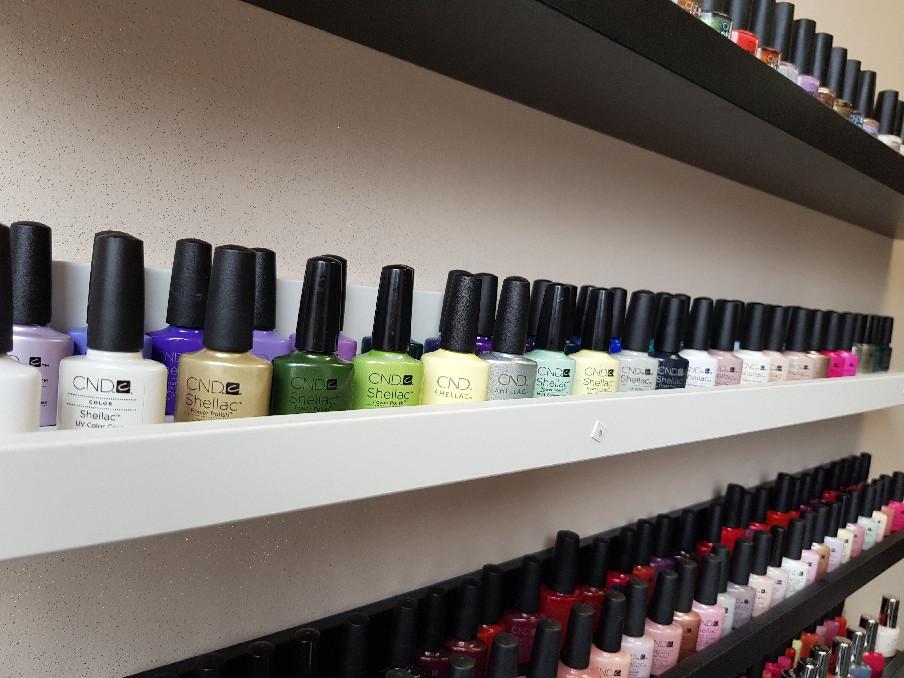
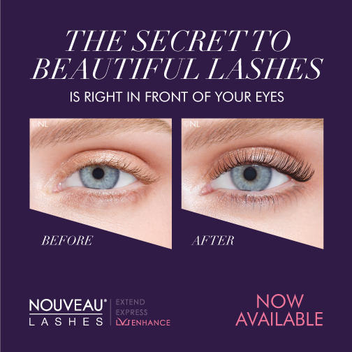
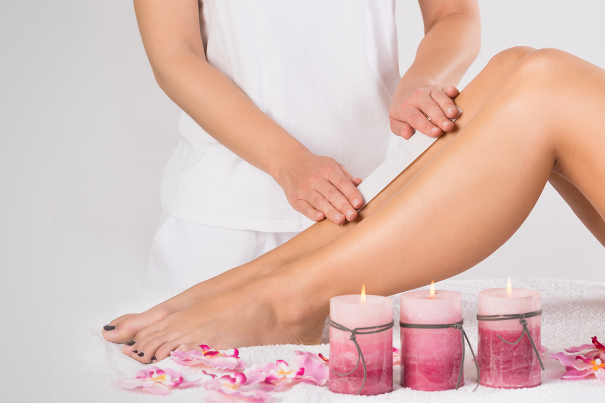
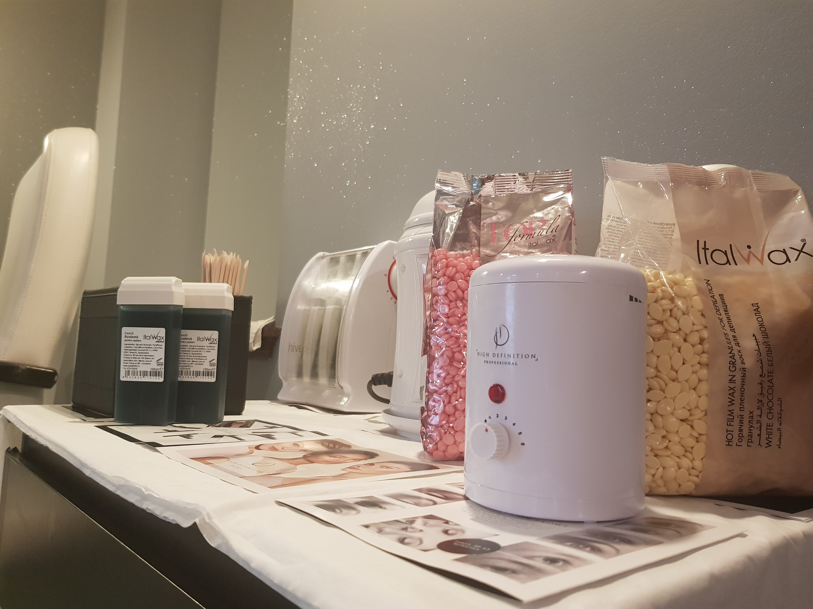
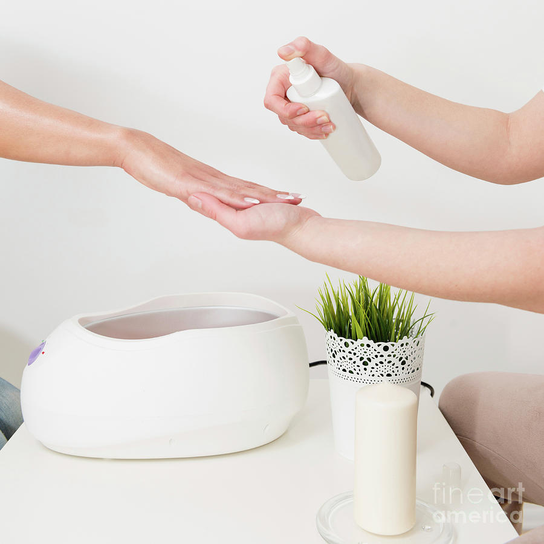

Great nails DON'T happen by chance, they happen by appointment.
A superior service with 🌐CND™ SHELLAC™🌐 Brand 14+ Day Nail Color system features a Base Coat,
|  |
A lash lift is a bit like an eyelash perm and gives the same effect as using an eyelash curler. A natural, semi-permanent lash treatment, it lasts 8-12 week and is suitable for clients no matter what their lash length. .. |
|---|
Full Body wax specialist
A creative beauty professional licensed to eliminate unwanted body hair from your eye brows down to your toes; dedicated on making your body as smooth as the day you were born while running on coffe and surrounded by hot waxing and numbing cream.
|  |  | 🌐™ITALWAX FILM WAX™🌐Beauticians prefer to work with film wax. Film wax is an improved version of the classical hot wax. Due to adding of specific components, wax has unique properties and advantages: • Film wax has lower melting temperature (40 – 42 °c degrees) • Film wax carefully follows the relief of the depilated area, catches all the hairs close to the skin surface, which allows removing hair from the difficult zones on the first try • When removed, film wax does not leave any broken hairs • 38% more economical in use, compared to classical hot wax • Film wax does not break while being removed • The number of applications to the treated area is 3 times less compared to traditional hot wax • Significantly reduces the time required for depilation procedure |
|---|
Your Life is like Waxing your unwanted hair, just remove the unwanted stuffs regulary, so that you can Shine in this Society...
|  | A paraffin treatment creates a sort of barrier on your skin that helps retain the oils that your body naturally produces. A wax bath can also aid in healing problems with the skin. Paraffin wax can be effective in soothing and softening calluses on hands and feet and healing dry cracked skin, especially on heels. |
|---|